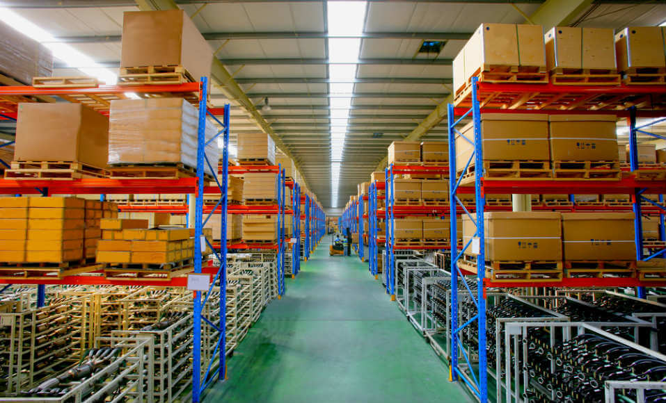

Enquanto muitos profissionais do ramo estão preocupados em nomear as operações de logística, o cliente está interessado em apenas duas coisas: agilidade e qualidade da entrega. Para o consumidor, não interessa se o produto passa por uma central de transbordo, por uma operação de cross docking ou se foi entregue no modelo last mile. Para ele, o que importa, mesmo, é que seja entregue no menor prazo possível. E, de preferência, antes da data prevista na hora da compra. Para o diretor de novos negócios da Divelog, Junior Cavalca, muito se fala sobre os modelos de operação, mas pouco se discute sobre como eles são complementares. “O mercado está cada vez mais tecnológico, querendo fazer o pedido o mais rápido possível e, consequentemente, receber a mercadoria comprada no menor tempo possível — e isto tanto nos modelos de B2B (Business To Business) quanto B2C (Business to Consumer)”, observa.
Em geral, o setor vê como distintos esses sistemas de logística. Quando, na verdade, podem ser vistos como três modelos complementares. “O que temos identificado é a falta de produto ou armazém para um determinado modelo, pois devido a ser uma operação mais nervosa, rápida, a mercadoria precisa ter agilidade entre o tempo de entrada, roteirização e saída para entrega”, salienta.
Cavalca explica que os três modelos de operação podem ser entendidos de formas diferentes, onde o CD de Mercadorias em Estoque foca no mercado-alvo, fazendo com que a mercadoria seja separada e entregue ao cliente, seguindo aquela definição de operação dedicada. No modelo de Transbordo ou Transferência, ocorre a integração de várias mercadorias oriundas de várias origens diferentes, porém com vários destinos ou cidades iguais. “Assim, se faz uma consolidação de mercadorias para reduzir o Transit Time e custos. Este modelo é um elo para que, no final, o produto possa ser entregue na Última Milha (Last Mile)”, explica.
Já o Cross Docking é uma operação parecida com o Last Mile, porém é entendida como grande quantidade. No entanto, o conceito é o mesmo: pois a entrega final é no cliente, como no Last Mile, porém muito mais vista como B2B. “Mas aqui gostaria de fazer uma pergunta, posso entender que tenho uma operação de Last Mile na operação de B2B? E posso afirmar que uma operação de Cross Docking pode ser B2C? Na nossa opinião, obviamente que sim. E já estamos vendo muita movimentação do mercado sobre isso. Ou melhor, podemos dizer que as operações não mudaram, o que mudou foi a denominação que se dá para os operações”, pondera Cavalca.
O diretor da Divelog antecipa que está trabalhando em novo modelo de pavilhões e infraestrutura para minimizar a escassez de espaços e atender a exigência de um transit time cada vez menor. Isso porque o mercado atual é focado em grandes galpões, direcionados para armazenagem e logística. No entanto, esse modelo não está mais alinhado à necessidade do mercado. E, para o setor de Transporte Rodoviário de Cargas (TRC), essa mudança de infraestrutura precisa ser mais rápida. De acordo com Cavalca, por não termos modelos de operações de Cross Docking e estruturas suficientes no mercado, muitas transportadoras operam em armazéns sem a dinâmica necessária para uma operação mais limpa. “Foi observando isso que temos, atualmente, o planejamento de condomínios com este perfil em seis cidades brasileiras. Porém a demanda é tão grande que precisamos integrar os players (construtoras, fundos, investidores) com os operadores (transportadores e mercado), para que se tenha uma operação mais rentável”, explica.